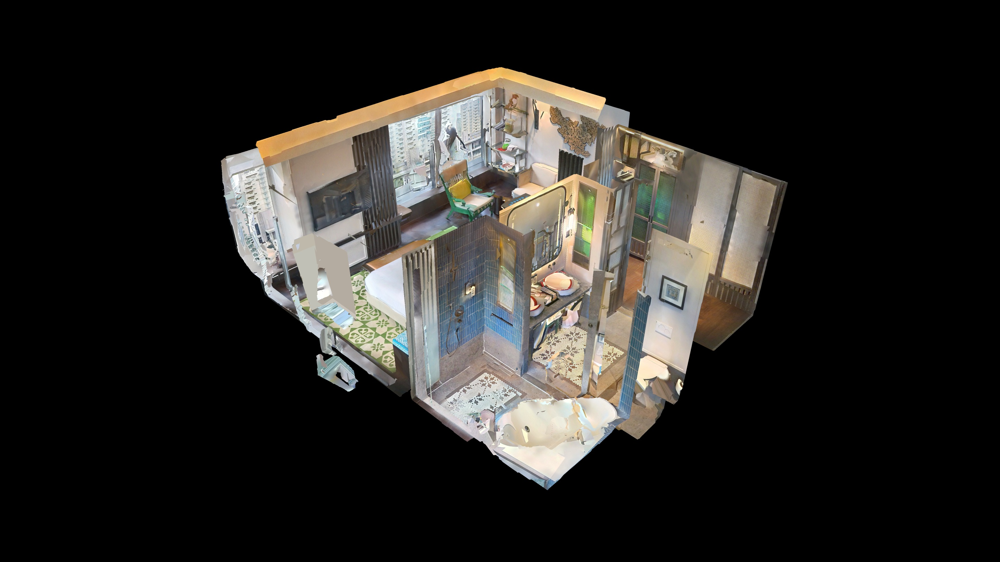

01
Progress documentation
Dated 3D records of every stage. Compare captures over time and verify claimed progress against what was actually built.
Construction
Dated Matterport scans of your site at every stage: progress documentation, remote inspections and as-built records your whole project team can walk through.
Construction moves fast and covers its own tracks. Once the ceiling closes, the M&E behind it is invisible. A Matterport scan freezes the entire site in measurable 3D at each milestone, so consultants, investors and owners can inspect progress from anywhere, and nothing is ever hidden behind a wall again.
PIXIE³ scans your site on a schedule that matches your programme: weekly, monthly or per milestone. Each capture becomes a dated, navigable record with true dimensions, ready for coordination meetings, claims and handover.
Explore a live tour →
Dated 3D records of every stage. Compare captures over time and verify claimed progress against what was actually built.
Consultants, financiers and overseas stakeholders walk the site from their desks. Fewer visits, faster sign-offs.
Timestamped, measurable site conditions for claims, variations and defect disputes. The scan does not take sides.
Hand over a navigable digital twin with services documented before closing up, useful long after the defect liability period.
Walk the latest capture in coordination meetings instead of relying on photos.
Measurable, dated records support progress claims and variation orders.
Send stakeholders a walkthrough link instead of a photo report.
Scan completed show units so buyers tour them before the gallery opens.
Tell us your project stage and scan schedule on WhatsApp. Fixed quote per capture, nationwide.